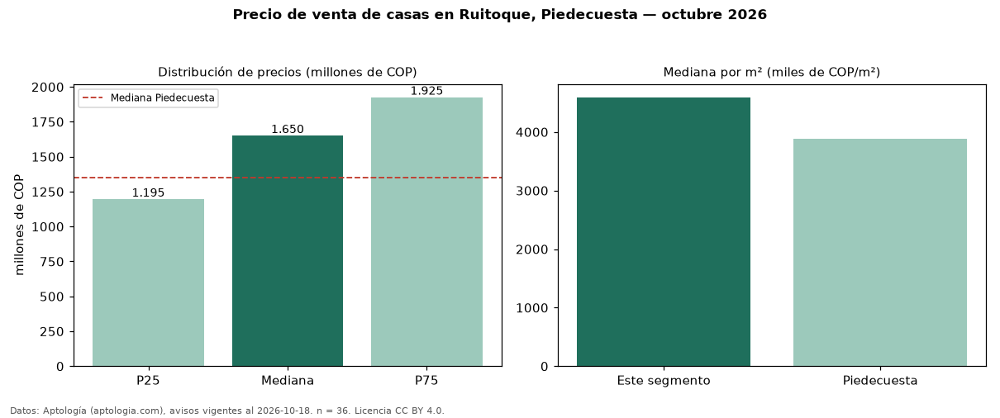

Precio de venta de casas en Ruitoque, Piedecuesta — octubre 2026
COP 1,65 mil millones es el precio mediano de casas en venta en Ruitoque, Piedecuesta (n = 36 avisos). Eso es 22 % por encima de la mediana de Piedecuesta para casas (COP 1,35 mil millones). Por metro cuadrado, la mediana es COP 4,59 millones/m² (n = 31 avisos con área), 18 % por encima de Piedecuesta (COP 3,88 millones/m²). El área mediana anunciada es 365 m². El segmento con más oferta es el de 3 o más habitaciones (35 avisos, mediana COP 1,60 mil millones). La administración mediana declarada es COP 665.000 al mes (n = 18). El estrato más frecuente es 5 (36 % de los avisos con estrato). La mitad central de los avisos va de COP 1,20 mil millones a COP 1,93 mil millones (razón 1,6), una dispersión moderada. Datos: Aptología (aptologia.com), CC BY 4.0 — https://www.aptologia.com/casas-en-venta/piedecuesta/ruitoque. Archivos: PDF, CSV con las cifras y gráfica PNG.

| Avisos únicos | 36 |
|---|---|
| Percentil 25 | COP 1.195.000.000 |
| Mediana | COP 1.650.000.000 |
| Percentil 75 | COP 1.925.000.000 |
| Mediana por m² | COP 4.591.836 |
Fuente: avisos vigentes de portales inmobiliarios recopilados por Aptología, deduplicados (mínimo 30 avisos únicos por celda). Precios pedidos, no cerrados. Fecha: 2026-10-18.